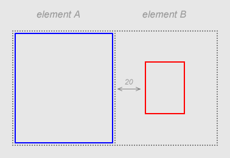

Secció 3: Propietats
4. Propietats relacionades amb les caixes
4.2. Parts d'una caixa
Com acabem de veure, cada element HTML genera una caixa. Aquest és un concepte que pot semblar estrany en un principi, però en realitat és força senzill. Una caixa té un contingut i opcionalment una àrea envolvent, que pot constar d'una àrea margin, una àrea padding i una àrea border. Com veurem de seguida, cadascuna de les tres àrees que formen l'envolvent està controlada per un conjunt de propietats que genèricament anomenarem propietats margin, propietats padding i propietats border.
Vegem-ne un exemple. L'element:
<P>Aquest és el contingut de l'element P</P>
genera la següent caixa:
Les àrees margin, border i padding són totes tres opcionals. Serà el dissenyador, mitjançant les corresponents propietats, qui decideixi quines estaran presents i quines no a cada element. A l'exemple que ens ocupa, suposem que hem establert que els elements P tenen presents les tres àrees.
- L'àrea border és l'àrea d'un determinat color (definit per les propietats border) que envolta el contingut de l'element. En aquest text utilitzaré indistintament la traducció 'vora' i la terminologia anglesa original àrea border o simplement border. Sovint la vora serà una simple línia, però no oblidis que en realitat és una àrea que pot tenir qualsevol gruix.
- L'àrea padding és l'àrea que separa la vora del contingut. Un exemple amb HTML clàssic són les taules: cada element TD té una àrea border i un contingut, però si especifiquem l'atribut cellpadding establirem, a més, una àrea padding entre el contingut i l'àrea border. Més endavant veurem quines són les propietats CSS que ens permeten controlar aquests aspectes. Com ja deus sospitar, els style sheets ens ofereixen un control molt més gran que els atributs de l'HTML. A més, utilitzant CSS podem assignar border i padding no només a les caselles de les taules, sinó a qualsevol element HTML. El color de l'àrea padding és el que tingui la propietat background-color de l'element, és a dir, el color de fons de l'àrea de contingut.
<P>Aquest és un paràgraf amb border i padding. No pateixis, de seguida aprendrem com s'ha de fer per especificar les propietats corresponents.</P>
Aquest és un paràgraf amb border i padding. No pateixis, de seguida aprendrem com s'ha de fer per especificar les propietats corresponents.
- L'àrea margin és l'àrea transparent que envolta l'àrea border. En aquest text trobaràs tant la terminologia anglesa com la traducció 'marge'. Tot i pertànyer a la caixa de la mateixa manera que ho fan les àrees border i padding, el fet de ser transparent fa que poguem pensar que margin estableix la separació entre un element i els elements que l'envolten. Per exemple:
Aparentment veiem dues caixes separades per un marge de 20 tot i que, si hem de ser estrictes, les dues caixes s'estan tocant. Si veiem les vores separades és perquè la caixa generada per l'element B conté un marge de 20. Permet-me insistir: considerar els marges com la separació entre caixes pot ser útil, i sovint és suficient, però val la pena tenir clar com funciona realment el box model, ja que en algunes ocasions ens pot permetre resoldre situacions complicades.
Element A
Marge: 0
Vora: color blau
Element B
Marge: 20
Vora: color vermell
Les propietats margin, border i padding es poden assignar de forma global, o bé individualment per cada costat. Com veurem de seguida, ho farem mitjançant les paraules angleses top (superior), bottom (inferior), left (esquerre) i right (dreta). Per exemple, podem decidir que un determinat element tingui vores pels quatre costats, padding només a l'esquerra i diferents marges superior i inferior. Les possibilitats són gairebé il·limitades, i si t'agrada dotar a les teves pàgines d'un aspecte atractiu segur que faràs un ús intensiu d'aquestes propietats.